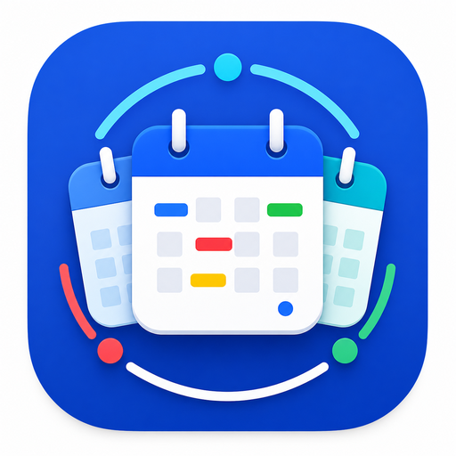
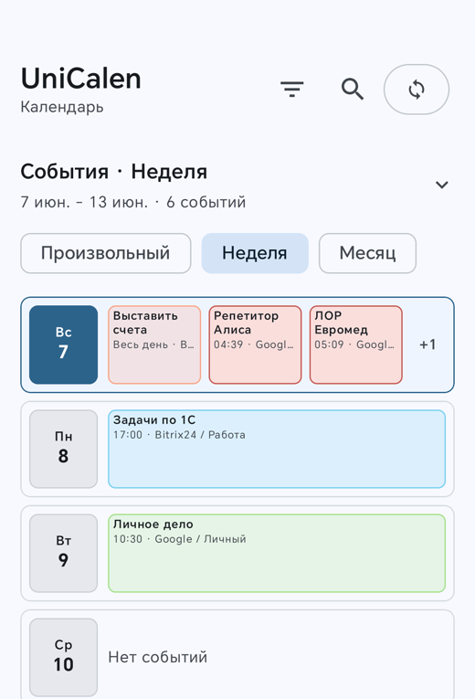
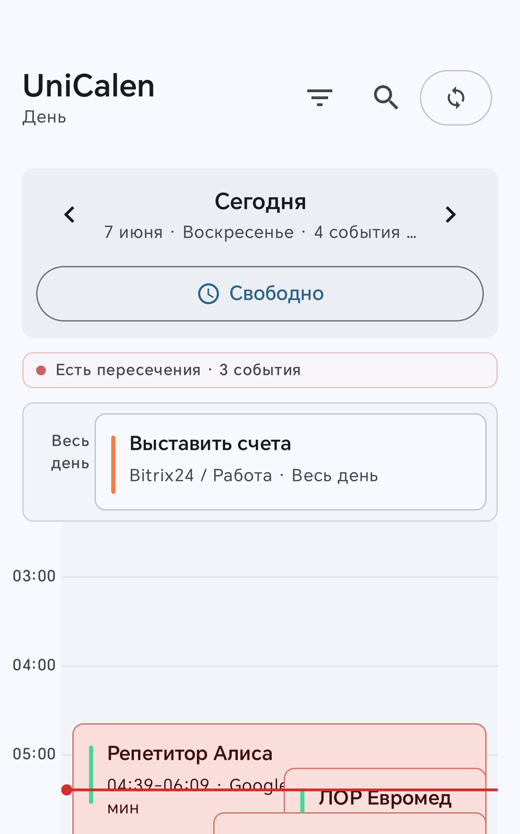
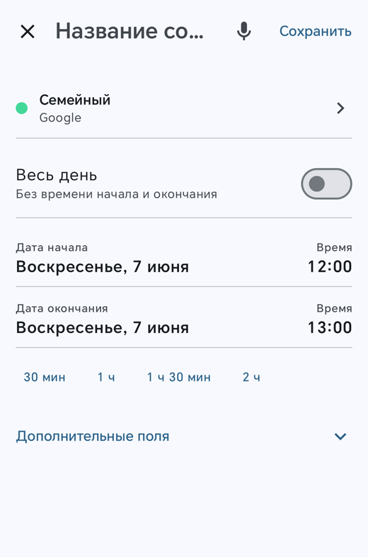
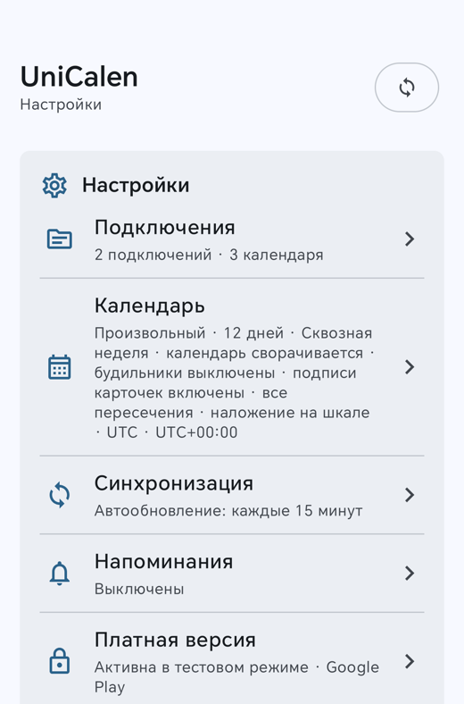

UniCalen
UniCalen

UniCalen - all your calendars and tasks
in one Android app
UniCalen is an Android calendar and task management app. It lets users connect Google Calendar and Google Tasks, view calendars, events and tasks, create and edit calendar events, and create, edit and complete tasks in one application.
Events from Google, Yandex, Mail.ru and Bitrix24 appear in a single timeline, reminders keep you on track, and home screen widgets put your schedule right on the Android desktop.
What UniCalen does
One feed for every calendar
Connect Google (direct sign-in, Android system calendar or iCal link), Yandex and Mail.ru over CalDAV, and Bitrix24. Events appear together with filters, colors and per-calendar visibility.
Day timeline and free slots
A full 24-hour day view shows your schedule by the hour, highlights free windows and lets you create or move events with a tap or a drag.
Tasks and task lists
Google Tasks and Yandex CalDAV tasks live on their own tab: multiple lists, filters, creating, editing, completing and deleting tasks right in the app.
Reminders that work for you
Multiple reminders per event, snooze options, a daily digest of upcoming plans and a quiet mode when you need focus.
Home screen widgets
Calendar, upcoming events, tasks and combined widgets keep the day visible without opening the app.
Local-first and transparent
Your data stays on your device. UniCalen talks only to the calendar services you connect, works without Google Play Services, and a built-in log explains every sync. See the Privacy Policy for details.
Screenshots

Week view with all calendars in one feed

Day timeline with free slots and overlaps

Fast event editor with voice input

Settings, connections and sync control
Download
UniCalen is currently in open beta on RuStore and does not require Google Play Services. A Google Play release is planned after the beta.
Support
Questions, ideas or trouble with synchronization? Write to shumkiiv@gmail.com.
Tip: the in-app diagnostics log can be shared through the system share sheet, which helps a lot when reporting a sync issue.